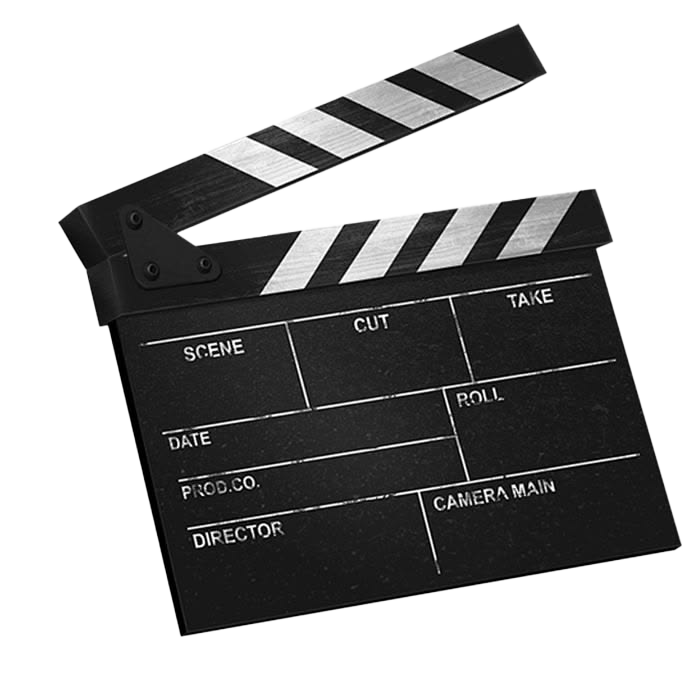

About Me!
Welcome to my website! I am a passionate individual dedicated to providing the best service possible.
Digital media has always been a creative way for me to express my ideas and interests. My portfolio focuses on graphic design, video editing, and other forms of digital art. I enjoy creating visuals that combine strong imagery, typography, color, and storytelling. My interest in digital media began with experimenting with video and editing software. Since then, I have continued developing my skills through school projects and personal projects. I hope to continue improving these skills and eventually work professionally in the digital media industry.

My favorite part of creating digital work is being able to take an idea and turn it into something visual. Graphic design allows me to experiment with layouts, fonts, colors, and images to create a specific mood. Video editing gives me another way to tell stories through movement, music, transitions, and timing. I am especially interested in entertainment and music-related media because of the amount of visual creativity involved. I want my portfolio to show both my technical abilities and my personal style. As I continue through college, I plan to build my portfolio with new projects and expand the types of work I can create.
Explore Adobe to learn more about professional creative software.
Visit Avid to explore professional media production tools.